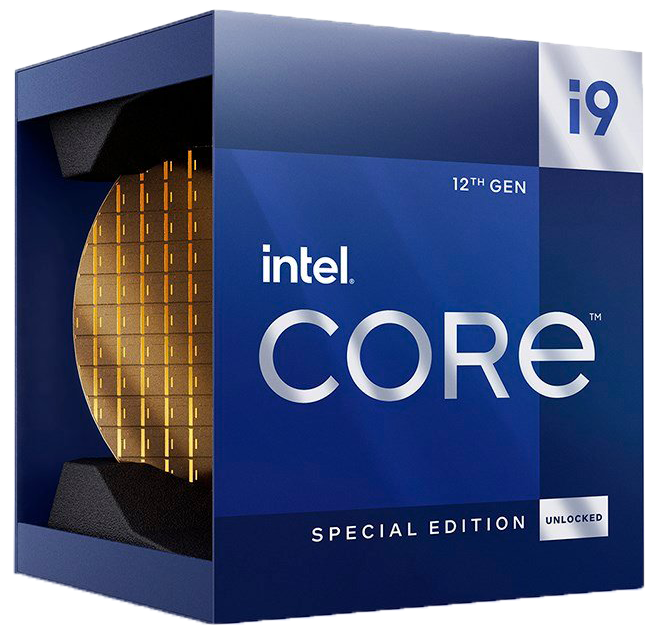
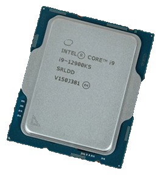
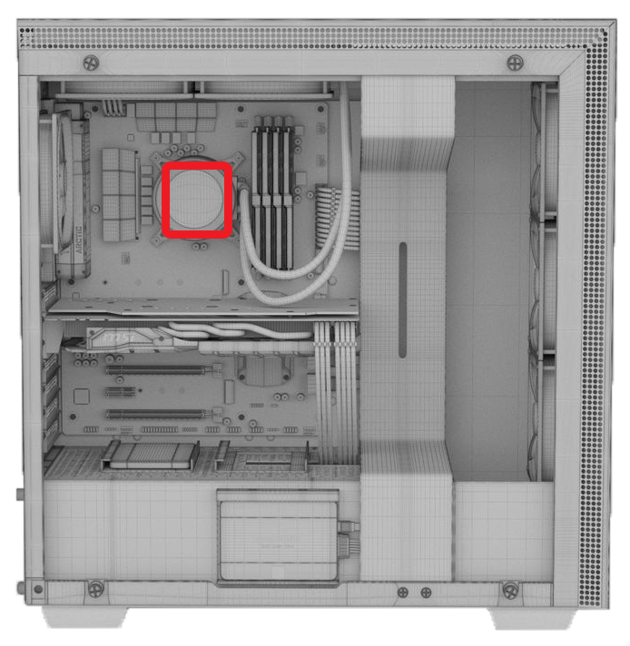

ITEM
Central Processing Unit (CPU)
Intel Core i9 12900KS
Price: $1150



INFORMATION
The CPU is the essential element that defines a computer. It in essence is
the 'brain' to the computer. Despite its fundamental significance, the CPU
can only operate in conjunction with other hardware. The device's main
circuit board, often known as the motherboard or mainboard, contains a
specific socket where the silicon chip is housed. It is distinct
from the memory,which serves as a temporary storage location for data.
Additionally, it exists independently of the graphics chip or graphics card
that creates the video and 3D visuals seen on your screen.
DESCRIPTION
The Intel Core i9-12900KS is a Special Edition microprocessor chip released in Q2 2022
by the Intel Corporation. It is currently (as of Q3 2022) the fastest rated gaming
CPU on the market due to its extreme performance under load (up to 5.5 GHz clock
speed and single-core performance out-benching all other CPUs on the current market).
The i9-12900KS uses the LGA 1700 socket, and hosts 16 cores with a base
clock speed of 3.4 GHz.
WHY THIS ITEM
- Most high-performance Intel CPU with 16 cores
- Ranked #1 for performance with gaming
- Powerful clock speed with 5.5GHz max turbo and 3.4GHz rated minimum
- Excellent single-core performance which gaming demands (which is why I didn’t go for an AMD
Threadripper that has more cores but less single-core performance)
- DDR5 memory support for maximal performance
- Onboard performance cores for intelligent onboard load management and distribution
- Recent release, most flagship CPU on the market
PERFORMANCE
| Total Cores |
16 Cores, 24 Threads |
| Performance Cores |
8 Cores, 16 Threads, 3.4 GHz Base, 5.5 GHz Turbo |
| Efficient Cores |
8 Cores, 8 Threads, 2.5 GHz Base, 4.0 GHz Turbo |
| Typical TDP (power consumption) |
150 W |
| TDP Up (max power consumption) |
241 W |
| Released |
Q2 2022 |
| UserBenchmark Ranking |
2nd out of 1358 |
ADDITIONAL
This CPU will run very hot as it is one of the most powerful CPUs on the market. This is why
there is water cooling for this part of the computer, to thermally regulate the extremely
robust hardware running under the hood.